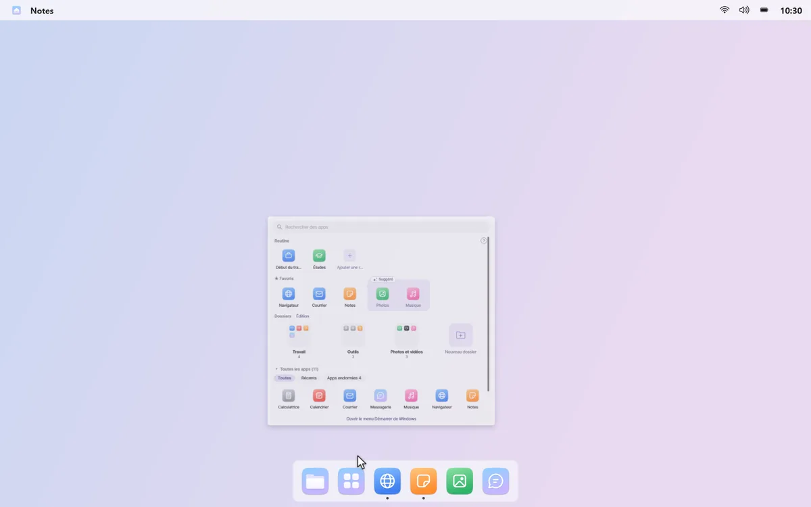
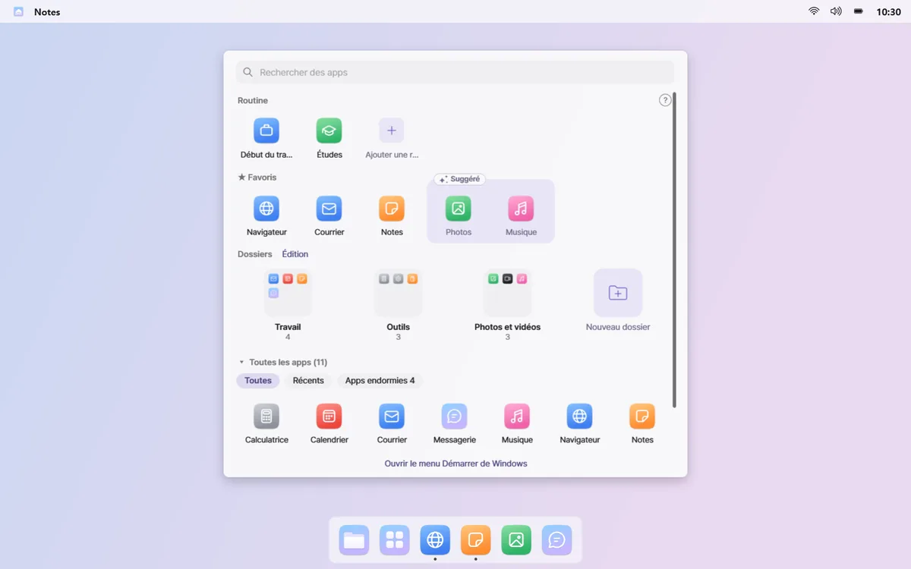
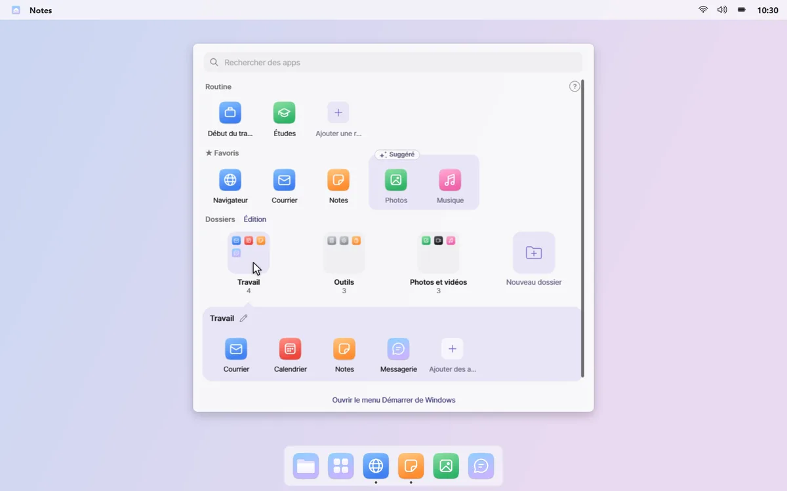

Vos apps utilisées, à portée de main
Cliquez sur Toutes les applications dans le Dock, et un panneau s'ouvre au centre de l'écran. Favoris, dossiers de vos apps utilisées et toutes les apps sont déjà triés et prêts.
Les apps oubliées · Des apps installées une fois et jamais ouvertes s'accumulent.
Tapez tout de suite
Le panneau ne prend pas tout l'écran, et le champ de recherche est prêt dès l'ouverture. Vos routines sont sur la rangée du haut, à un clic.


Des favoris, et quelques suggestions
Épinglez les apps que vous ouvrez le plus à la rangée Favoris. Les apps souvent ouvertes ces derniers temps apparaissent en suggestions en pointillé ; cliquez sur + pour les ajouter.

Des dossiers avec seulement ce que vous utilisez
Les apps sont rangées dans des dossiers comme Travail, Communication et Jeux, chacun ne contenant que les apps utilisées récemment. Renommez et réordonnez les dossiers d'un clic en mode édition.

Rangez les apps endormies
Voyez les « apps endormies », celles que vous n'avez pas ouvertes depuis plus de 60 jours, avec l'espace qu'elles occupent. Masquez-les dans le panneau, ou choisissez-en quelques-unes à désinstaller via Windows.

L'historique des apps qui alimente les suggestions et les dossiers reste sur votre PC. Faites un clic droit sur un espace vide du panneau et désactivez « Mémoriser les apps utilisées » pour l'arrêter et l'effacer. Lire la politique de confidentialité
Bon à savoir
- Désinstaller des apps endormies ouvre tour à tour le programme de désinstallation Windows de chaque app. mongdock ne supprime rien lui-même, et les apps qui ne peuvent pas être supprimées ainsi sont signalées dans la liste.